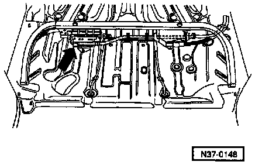
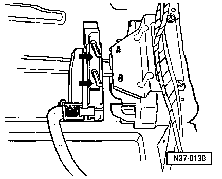
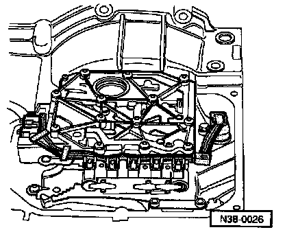
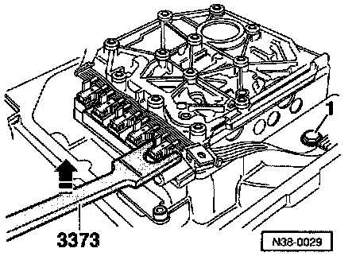
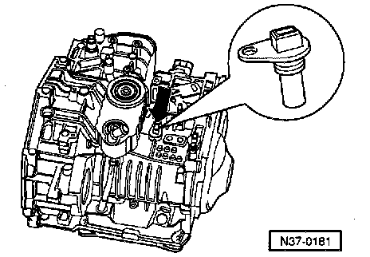
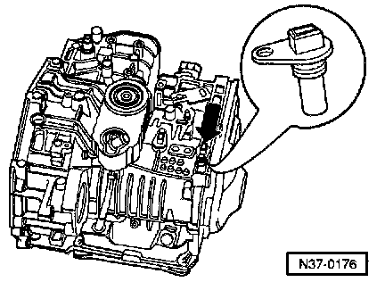

Automatic Transmission, Components

1. Automatic Transmission Control Module (TCM) -J217-
- Location See Fig. 1
- Removing See Fig. 2
- Installing See Fig. 3
2. Valve body
- Location See Fig. 4
- Solenoid valves 1 N88-, 2 -N89-, 3 -N90-, 4 -N91-, 5 -N92-, 6 -N93-, and 7 -N94- are attached to the valve body
3. Conductor strip with integrated transmission fluid temperature sensor -G93-
- Location See Fig. 5
- Removing and installing See Fig. 6
4. Transmission Vehicle Speed Sensor (VSS) -G38-
- Location and removing and installing See Fig. 7
5. Vehicle Speed Sensor (VSS) -G68-
- Location and removing and installing See Fig. 8
Fig.1:

Fig. 1 Location of automatic Transmission Control Module (TCM) -J217-
The control module (arrow) is located under the rear seat.
Fig.2:

Fig. 2 Removing automatic transmission control module -J217-
- Release multi-pin connector, then disconnect connector from control module.
- Remove control module.
Fig.3:

Fig. 3 Installing automatic transmission control module -J217-
- Connect multi-pin connector to transmission control module -J217-, pins (arrows) then lock multi-pin connector in place.
Fig.4:

Fig. 4 Valve body
Location: The valve body is located above oil pan.
Solenoid valves 1 -N88-, 2 -N89-, 3 -N90-, 4 -N91-, 5 -N92-, 6 -N93-, 7 and -N94- are attached to the valve body.
Fig.5:

Fig. 5 Conductor strip with transmission fluid temperature sensor -G93-
Location: The conductor strip is located in the oil pan on the valve body.
- The conductor strip can be changed with transmission installed without removing the valve body.
- Do not kink or damage the conductor Strip.
Fig.6:

Fig. 6 Removing and installing conductor strip
- Disconnect connector at transmission and remove retaining clamp, drain ATF, remove oil pan then remove cable guide.
- Pry conductor strip off solenoid valve in direction of (arrow) with special tool 3373.
NOTE:
If the locating points are damaged, the valve body must be replaced.
Install in reverse order of removal.
Fig.7:

Fig. 7 Transmission Vehicle Speed Sensor (VSS) -G38-
Location: Vehicle speed sensor (arrow) is located on top of transmission.
Removing and installing transmission vehicle speed sensor
- Disconnect connector from sensor.
- Remove bolt and remove sensor.
- Replace seal.
- Install in reverse order of removal.
Tightening torque: 10 Nm (7 ft lb.)
Fig.8:

Fig. 8 Vehicle Speed Sensor (VSS) -G68-
Location: Vehicle speed sensor (arrow) is located on top of transmission.
Removing and installing vehicle speed sensor
- Disconnect connector from sensor.
- Remove bolt and remove sensor.
- Replace seal.
- Install in reverse order of removal.
Tightening torque: 10 Nm (7 ft lb.)